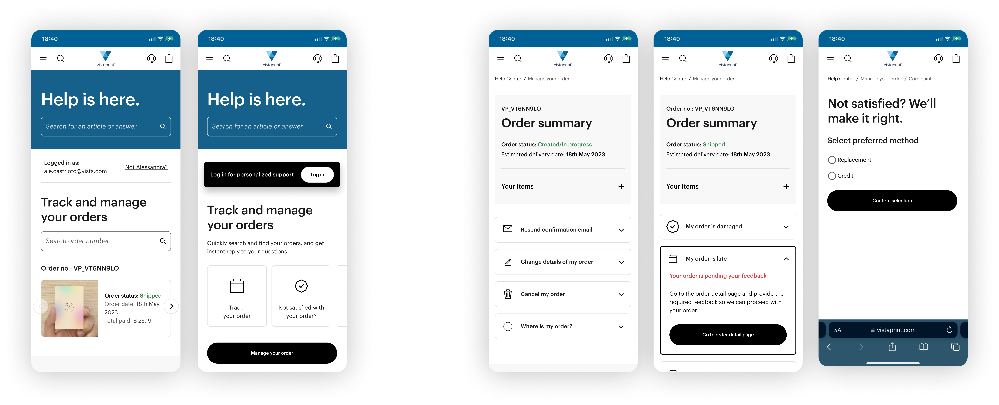
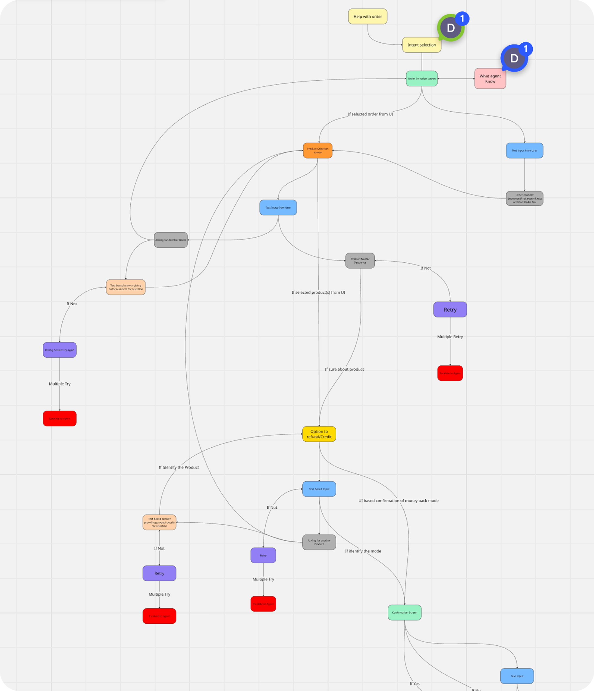

Designing automation across
web, AI and human support.
Post-order support used to begin with a contact. We redesigned it to begin with a resolution path.
CUSTOMER PROBLEM
“Something went wrong with my order.”
↓
SHARED RESOLUTION LOGIC
Context
→
Identify
→
Verify
→
Policy
→
Resolve
WEB
Self-service
AI
Vista Assistant
VOICE
Phone automation
↓
CAREFORCE
Human expertise when automation stops being the right tool.
01 — THE STARTING POINT
Almost every post-order problem still depended on a human.
Specialists had to identify the right item, interpret order state and policy, then perform the resolution manually.
ORDER TRACKING
Self-service available
ORDER CANCELLATION
Limited self-service
Authenticated customers only
LATE / MISSING ORDER
Human specialist
DAMAGED DELIVERY
Human specialist
QUALITY / PRINT ISSUE
Human specialist
DESIGN ISSUE
Human specialist
217K
annual order-status, delayed and missing-order cases
Enough volume to justify moving predictable investigation out of assisted support.
The opportunity wasn't another support interface. It was reusable resolution logic.
02 — PROVING THE MODEL
Self-service didn't start with full automation.
The first web MVP let customers investigate the problem themselves and send CARE structured case information.
EARLY SIGNAL
Customers did the investigation.
Phone contacts decreased while email contacts increased: an early signal that customers were willing to do more before reaching CARE.

03 — DESIGNING THE RESOLUTION LOGIC
“My order is late” isn't a status.
Conversation can start anywhere. The service still has to assemble enough customer, order, product, system and policy context to act safely.

DESIGN PRINCIPLE
Design for required information, not required turns.
VARIABLE INPUT
Conversation
Any order. Partial. Correctable.
CUSTOMER
Identity
Authentication / account match
ORDER
Transaction
Relevant order
PRODUCT
Item-level context
Resolution happens at product level,
not ambiguous order level.
ISSUE
Problem + evidence
What happened and what supports it
CHECKS
Policy + history
Eligibility, previous actions, abuse checks
ENOUGH CONTEXT
Resolve
Automate, route or hand off safely.
INTERACTIVE PROTOTYPE
Try the late-order resolution logic.
Select an order and product to see how the same customer intent can lead to a different resolution.
Vista Assistant | PROTOTYPE
Type here
WORKED EXAMPLE Explore the late / missing-order decision logic +
01 · CONTEXT
Identify the right item.
Customer → order → product
02 · SYSTEM EVIDENCE
Establish what is actually happening.
Production state · tracking · delivery status · expected delivery date
03 · CUSTOMER + POLICY
Decide what the situation requires.
DELAY ACCEPTABLE
Inform + continue tracking
CUSTOMER DISSATISFIED
Consider shipping compensation
04 · RESOLUTION
Inform · shipping credit · refund · replacement · specialist
Final action also considers previous remediation and eligibility.
SYSTEM DETAIL · INTERPRETING EXISTING APIs
INPUTS
Tracking status
Expected delivery date
Today's date
→
Expected delivery date
Today's date
EXPERIENCE LOGIC
EDD < today
+ not delivered No explicit
→
+ not delivered No explicit
DELAYED state required.
CUSTOMER MEANING
This item is late.
Existing APIs became inputs to the service logic, rather than the experience itself.
04 — AUTOMATION BOUNDARIES
Automation wasn't the goal. Reliable resolution was.
We weighed customer experience, financial exposure, technical capability and the value of specialist judgement.
AUTOMATE
Damaged delivery
The issue is relatively objective, and the cost of reviewing every image can exceed the exposure from occasional incorrect remediation.
Product
→
Previous action?
→
Damage
→
Resolve
DESIGN DECISION
Skip human proof validation when the business exposure is lower than the operational cost of reviewing every case.
KEEP HUMAN
Manufacturing / print issue
“It printed wrong” can describe a production defect, a design issue or customer-authored content.
Product
→
Evidence
→
Human diagnosis
→
Correct action
DESIGN DECISION
Preserve specialist evaluation when diagnosis or judgement materially changes the resolution.
05 — MAKING THE LOGIC REUSABLE
The logic stopped belonging to one interface.
Channels entered with different context, but the same resolution rules could sit underneath them.
SHARED RESOLUTION MODEL
Acquire only what is missing.
Apply the same service rules.
POLICY
CARE Process
OPERATIONS
CARE Ops + specialists
PLATFORMS
Order Platform · Chat Anywhere · Self-service
GUARDRAILS
Legal · Abuse / Fraud · SWAN
POLICY → PRODUCT BEHAVIOUR
Compensation thresholds · proof requirements · abuse flags · legal fallbacks
06 — WHAT IT ENABLED
From assisted support to reusable resolution capability.
Global contacts entering Vista Assistant and resolving without human support.
Across live chat, phone and email.
Web · AI · voice automation · human tooling
THE SHIFT
Self-service became less about building another interface and more about encoding a resolution capability that could travel.